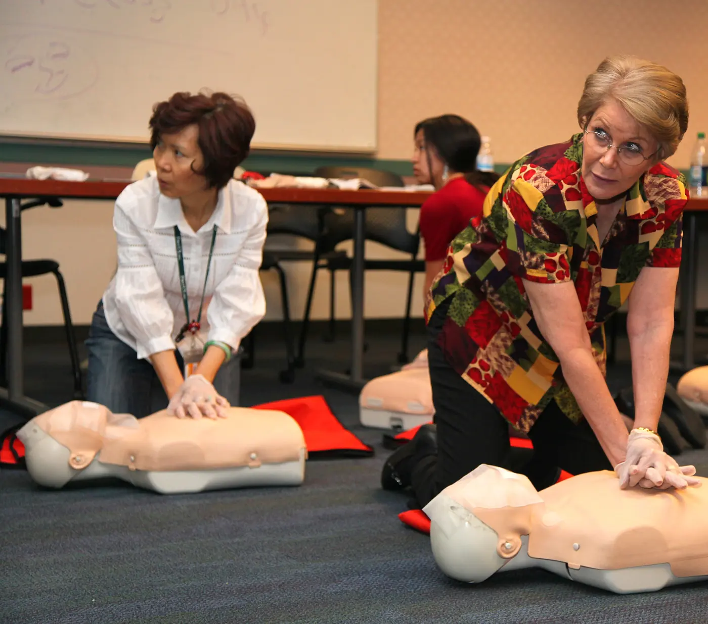
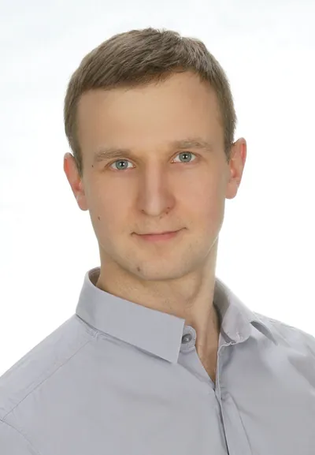

Audyty bezpieczeństwa pożarowego
Wizja lokalna w zakładzie pracy, a po niej protokół z uwagami i zaleceniami.

PPOŻ, BHP i pierwsza pomoc dla firm: dokumentacja, szkolenia i stały nadzór. Prowadzi strażak PSP, główny specjalista ds. BHP i ratownik medyczny w jednej osobie.
Zapytaj o wycenęViro Tomasz Suder, Warszawaoperaty, instrukcje, szkolenia
Nazywam się Tomasz Suder. Wspieram pracodawców i osoby kierujące pracownikami w obowiązkach związanych z bezpieczeństwem ludzi - od dokumentacji po szkolenie całej załogi.

Absolwent studiów z inżynierii bezpieczeństwa (specjalność bezpieczeństwo pożarowe) w Szkole Głównej Służby Pożarniczej, specjalista ochrony przeciwpożarowej. Od 2006 roku w Państwowej Straży Pożarnej.
Studia podyplomowe z bezpieczeństwa i higieny pracy oraz kilkuletnia praktyka zawodowa - tytuł głównego specjalisty ds. BHP.
W 2019 roku ukończył studia z ratownictwa medycznego i uzyskał tytuł ratownika medycznego.
W codziennej pracy za cel obieram sobie zapobieganie sytuacjom zagrożenia lub reagowanie na nie.Tomasz Suder
Kompleksowa obsługa PPOŻ: stała współpraca, w ramach której prowadzę obowiązkowe szkolenia pracowników, ewakuacje obiektu i bieżącą dokumentację.
Wizja lokalna w zakładzie pracy, a po niej protokół z uwagami i zaleceniami.
Opracowanie i aktualizacja instrukcji dla obiektu.
Operat do wniosku o zezwolenie na zbieranie lub przetwarzanie odpadów.
Przeprowadzenie ewakuacji z dokumentacją i obowiązkowym powiadomieniem właściwej komendy PSP.
Praktyczne szkolenie z użycia podręcznego sprzętu gaśniczego.
Ocena zagrożenia wybuchem, a w razie potrzeby dokument zabezpieczenia przed wybuchem.
Operat przeciwpożarowy jest częścią wniosków o zezwolenie na zbieranie odpadów, zezwolenie na przetwarzanie odpadów oraz pozwolenie na wytwarzanie odpadów uwzględniające zbieranie lub przetwarzanie.
Obowiązek opracowania operatu uzgodnionego z komendantem powiatowym (miejskim) PSP dotyczy więc firm, które starają się o te zezwolenia.
Instrukcja jest wymagana w obiektach lub ich częściach stanowiących odrębne strefy pożarowe, przeznaczonych na funkcje użyteczności publicznej, zamieszkania zbiorowego, produkcyjne, magazynowe i inwentarskie, w których występuje strefa zagrożenia wybuchem, albo gdy:
Kompleksowa obsługa BHP to pakiet usług: szkolenia, polityka bezpieczeństwa i audyty. Zakres każdorazowo ustalamy razem.
Zgodnie z rozporządzeniem w sprawie szkolenia w dziedzinie BHP, plus szkolenia dodatkowe według potrzeb firmy.
Kontrola zakończona raportem z nieprawidłowościami i propozycjami poprawy.
Karty oceny ryzyka dla poszczególnych stanowisk pracy.
Instrukcje BHP, także w formie obrazkowej i w standardach graficznych firmy.
Komplet dokumentów po wypadku przy pracy lub w drodze do i z pracy.
Pomoc w opracowaniu innych dokumentów z obszaru BHP.
Szkolenie z pierwszej pomocy przedmedycznej dla różnych grup zawodowych, w zakresie ustalonym z firmą. Prowadzi ratownik medyczny, który na co dzień służy w straży pożarnej.
Trzy metody do wyboru - dobieram je do pomieszczenia i potrzeb.
Bez chemii - środkiem biobójczym jest ozon wytwarzany z tlenu z powietrza.
Alkohol o stężeniu powyżej 60%, nanoszony natryskowo lub ręcznie na powierzchnie.
Nadtlenek wodoru w postaci mgły - metoda z laboratoriów biologicznych i pomieszczeń medycznych.
Proszę napisać, czego dotyczy sprawa i ilu pracowników ma firma - odpowiem z propozycją zakresu i terminu.
Viro Tomasz Suder
ul. Zabłocińska 8/55, 01-697 Warszawa
NIP 658 189 86 25